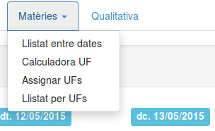
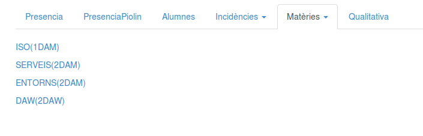
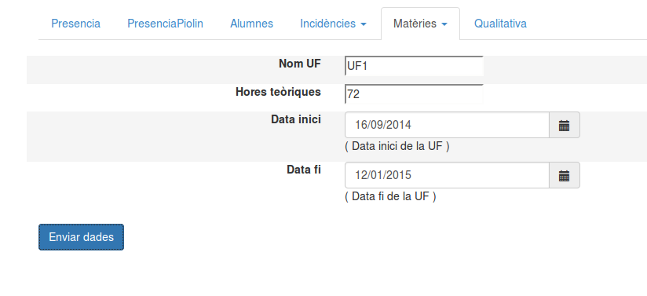
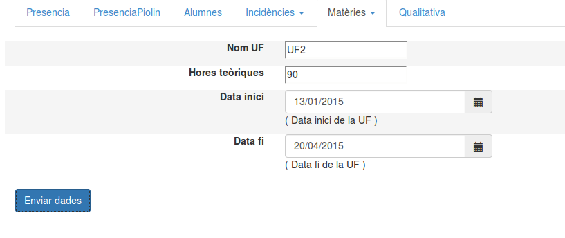
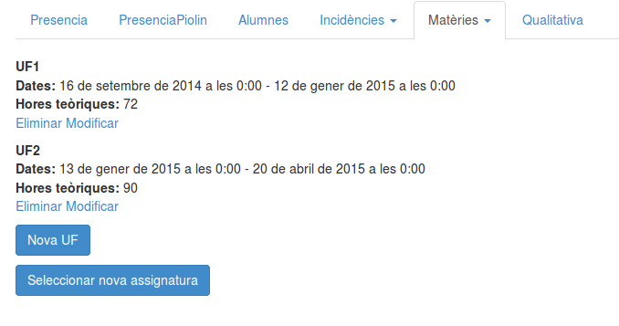
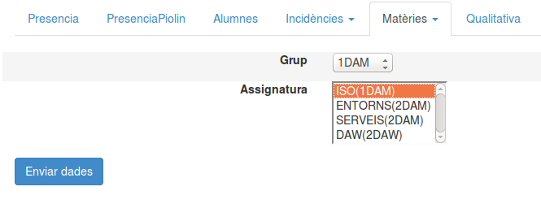
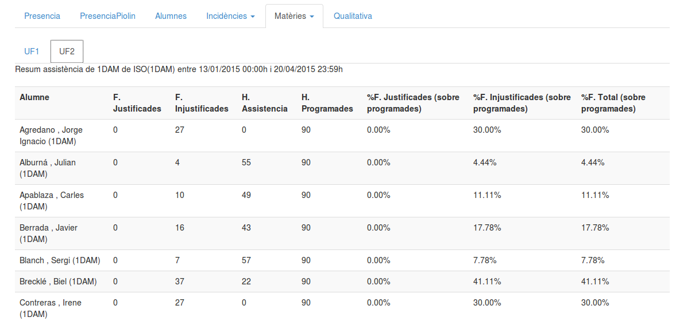

Sovint volem saber el % d'assistència que representa que un alumne tingui 5, 10 o 20 faltes de la UF. Amb aquesta opció ho podem saber fàcilment.
Ens cal realitzar dos passos.
Accedim a matèries Assignar UFs
Seleccionem la matèria que ens interessa, entre les que impartim.
Introduïm informació de la primera UF.
Seleccionem la opció Nova UF, introduïm informació de la UF2.
Comprovem que totes les UFs apareguin dins el llistat.
Seleccionem la opció llistat per UFs
Seleccionem la matèria de la qual volem obtenir el llistat.
Obtenim el llistat, a partir de les pestanyes de la part superior podem veure informació de cada UF en concret.
